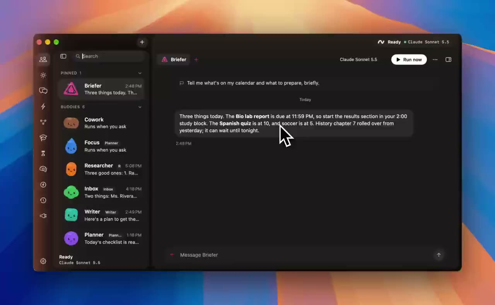
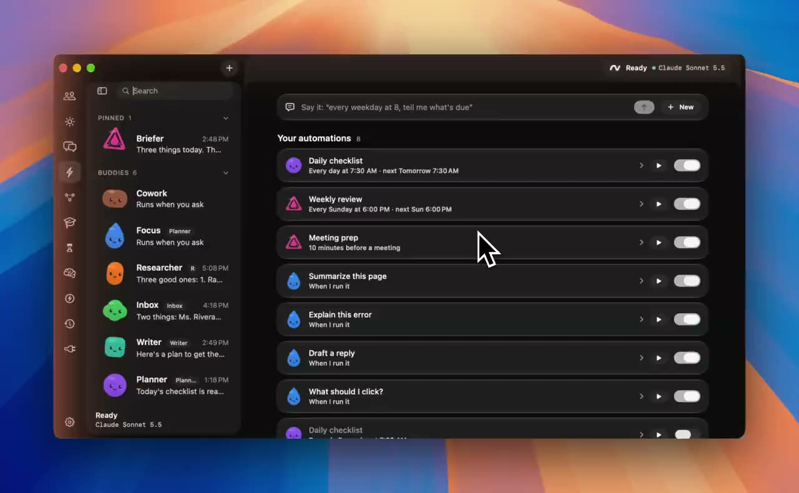
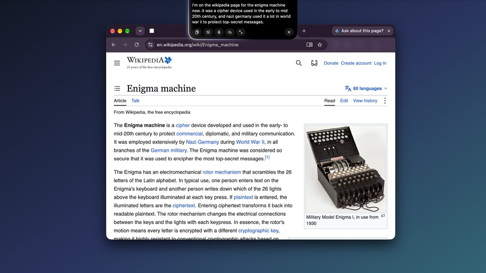
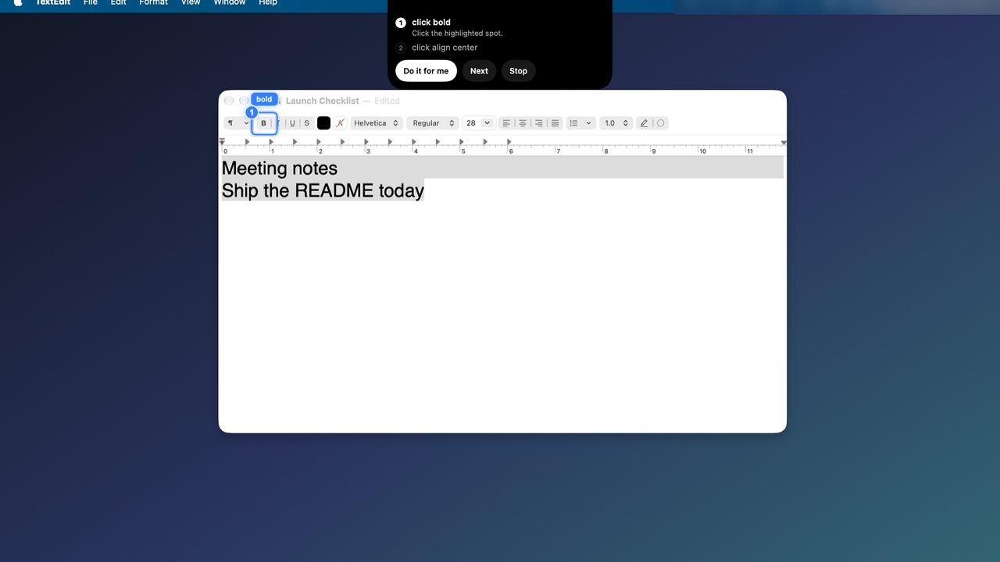

Hand off the answer
When one buddy finishes its job, the buddies you picked get the answer and start on their own. A buddy with several inputs waits for all of them.
Wisp · for Mac · free & open source
Wisp lives in your Mac's notch. Hold ⌃⌥ and say it: it drafts the email, runs the browser errand and keeps a team of buddies working on a schedule. Private by default.

Hold two keys and say what you need. Wisp reads your screen, drafts the email, runs the errand, tidies your desk and keeps a team of buddies working while you're away. All of it on your Mac, and it asks before anything leaves.

A buddy on a schedule writes three lines on what matters today. No prompt, no tab to open.
Its answer goes to the Writer, who starts on its own.
The lab report, split into four steps that fit around your day.

“Every weekday at 8, tell me what's due.”
When it runs, what it reads, where the answer goes and which buddy owns it.
Nothing private goes to a cloud model until you allow it.
Between nine and five






01 · The method
Three quiet steps, and you stay in charge of every one.
Hold ⌃⌥ and speak, or type from the notch. Wisp hears you on-device and reads your screen.
It drafts the email, works through the page in its own tab, tidies your windows or points at the button you were hunting for.
Anything that sends, deletes, pays, posts or runs a command shows a card first. Nothing leaves until you say so.
Works with the apps you already use
02 · The team
Each buddy owns one job, with its own chat, memory, model and tools. They run on a schedule, hand their results to each other, and only interrupt you when something needs your OK.
Reads the calendar and mail each morning and writes three lines on what matters. Then it hands the brief on.
When one buddy finishes its job, the buddies you picked get the answer and start on their own. A buddy with several inputs waits for all of them.
Ask up to four teammates at once, split work into side threads, or draft a new teammate with your OK.
Every chat runs on its own. A message sent mid-job can steer the work in progress.
If a model hits a limit or goes down, the next one takes over.
Run a buddy on your Claude subscription with a kept session per conversation.
Every 20 messages a buddy reviews what it remembered and fixes it. Notes you wrote are never touched.
03 · The collection
An editable draft, addressed from Contacts. Nothing sends until you press Send.
“Text mom I'm running late” finds the right person and shows the message first.
Works through pages in its own tab and asks before anything irreversible.
Groups tabs by site or topic and closes duplicates.
Halves, quarters, thirds, maximize, next display. No model call.
“Set a timer for 25 minutes.” “Pause the music.” Instantly.
Runs your Shortcuts by name, always with your OK.
Clicks and types in Mac apps through cua-driver, with each action shown first.
A labelled marker on the control you asked about, in about a tenth of a second.
Steps on your live screen, ticked off as you click, or done for you.
Handwritten steps beside a problem, one line at a time. Save it as a PNG.
Explanations on movable cards you can ask follow-ups on.
Drag a box around anything, or say “explain option C”.
“Tell me when the build finishes.” A notification when it does.
Weather, places nearby, calendar, reminders and timers, right in the notch.
Your Canvas deadlines in a Wisp calendar, synced every hour.
Due dates and events in Reminders, with unfinished items rolled over.
Focus time proposed in your free gaps. Nothing is written without your OK.
A focus timer in the notch that hides distracting apps and sites.
Say it, pick a template, or save an answer. Runs on a schedule or an event.
Named agents with their own job, chat, memory, model and tools.
One buddy's finished answer starts the next.
Ask several buddies at once, or split work into side threads.
Several buddies in one chat. @name picks who answers.
Draw buddies, conditions and approvals as a flow on a canvas.
If a model is down or out of credit, the next one takes over.
A local wiki in Obsidian format, built from your files and conversations.
Each buddy keeps its own notes and tidies them. Yours are never touched.
Save a finished task and replay it later without the model.
Tokens and cost per turn. Counts only, never content.
Ollama, Apple on-device, Claude, GPT, Gemini, Grok or OpenRouter.
MCP servers and Composio for Gmail, GitHub, Notion and more.
Hold ⌃⌥⇧ to type by voice into any app, on-device.
Double-tap ⌃ and talk without holding a key.
04 · Privacy
Your Mac is the whole pipeline. By default, nothing about your screen, voice or words leaves this machine.
Your voice, your screen and the model's answer never leave this Mac. There is no route out, so there is nothing to switch off.
The default model runs on your Mac through Ollama. Brain pages are plain markdown files on your disk.
Claude, GPT and Gemini are bring-your-own-key, or use your Claude subscription. Wisp labels clearly when a screenshot would leave your Mac.
No account, no analytics code, no telemetry. Keys and feed URLs live in your login Keychain. The usage log keeps counts, never content.
05 · Get Wisp
One command installs it, or drag it in from a .dmg. It's free and AGPL-3.0 licensed.
# paste in Terminal
curl -fsSL https://anaylab.github.io/wisp/install.sh | bash
# then hold ⌃⌥ and talk.
# Update later by running it again.06 · Before you try it
By default, nothing. Speech to text, voice, OCR and the local model all run on-device. The only network use by default is a one-time download of the speech models and optional weather and places lookups, which send a place name or query, never a screenshot. If you pick a cloud model, your transcript and screenshots go to that provider, and Wisp says so.
Anything that sends, deletes, pays, posts, invites or runs a command shows a card first, even if you turned on auto-approve, and you can edit the wording before you allow it. Password and payment fields in the browser are refused outright. Scheduled automations only get tools that never prompt.
Yes. Wisp is open source under the AGPL-3.0 license, and the default setup costs nothing to run because the model, speech and voice are all on your Mac. If you choose a cloud model, you pay that provider with your own key or subscription.
An Apple-silicon Mac on macOS 26 or later, since the notch uses Liquid Glass. 16 GB of memory is recommended for the local model.
Pointing, walkthroughs and screen reading work anywhere: native apps through Accessibility and everything else through on-device OCR. Browser control works with Chrome and Safari.
Notarizing needs Apple's paid developer program. The install command downloads with curl, which macOS doesn't flag, and checks a checksum and signature first. The .dmg works too, after one right-click approval the first time. A notarized build may come later.